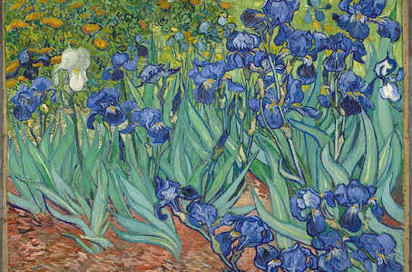

Vincent Willem van Gogh fue un pintor neerlandés, uno de los principales exponentes del postimpresionismo.Pintó unos 900 cuadros y realizó más de 1600 dibujos. Una figura central en su vida fue su hermano menor Theo, marchante de arte en París, quien le prestó apoyo financiero de manera continua y desinteresada.
La Noche Estrellada

La noche estrellada es la obra maestra del pintor postimpresionista Vincent Van Gogh. El cuadro lo realizó en el sanatorio de Saint-Rémy-de-Provence, donde se recluyó hacia el final de su vida, a mediados de 1889, trece meses antes de su muerte. Van Gogh usó óleo humedecido y pinceles finos para realizar la obra.
Autoretrato

El autorretrato de 1889 es un óleo sobre lienzo pintado por el artista postimpresionista Vincent van Gogh. El cuadro, que podría ser el último autorretrato de van Gogh y es el más conocido del artista, fue pintado en septiembre de ese año, poco antes de dejar Saint-Rémy-de-Provence en el sureste de Francia.
Lirios
Los lirios es un cuadro al óleo sobre lienzo realizado en mayo de 1889 por Vincent Van Gogh. Es una de las muchas pinturas y grabados de lirios creadas a lo largo de su vida. En 1987 fue vendido por 53.900.000 dólares, la cifra más alta jamás pagada por un cuadro.
Terraza de café por la noche
Terraza de café por la noche es una pintura del neerlandés Vincent van Gogh realizada en Arlés en septiembre de 1888 representando el ambiente de una terraza. En esta pintura Van Gogh expresó sus nuevas impresiones de Francia meridional.
El café de noche

El Café de noche es una pintura realizada por el pintor holandés Vincent van Gogh en septiembre de 1888 en Arlés. Su título está escrito en la parte inferior derecha del cuadro, bajo la firma. Actualmente este cuadro forma parte de las colecciones de la Yale University Art Gallery.